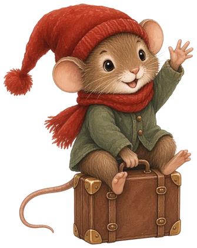

Adventskalender för de yngsta
Små busare · 1–3 år

Busnissens buskalender för 1–3-åringar: 24 korta brev från Busnissen, samlingssången och ett superenkelt uppdrag varje dag. Känna, titta, röra sig – 2–5 minuter om dagen. Inga smådelar, och den vuxna förbereder.
Har ni äldre barn? Det finns också en version för 3–6 år.
📄 Ladda ner PDF (1–3 år) 🎵 Samlingssången (mp3)
De 24 luckorna 1 Någon har flyttat in! ”Hej! Jag är Busnissen. Jag bor här nu. Knacka på min dörr!” 2 Stolarna fryser! ”Brr! Stolarna fryser. Kan ni krama dem?” 3 Bollar på rymmen! ”Oj! Bollarna rullade iväg. Hjälp mig hitta dem!” 4 En mössa till nissen ”Min mössa är borta! Har ni en mössa?” 5 Gosedjurens samling ”Mina gosedjursvänner vill också sjunga!” 6 Upp och ner! ”Busnissen har vänt saker upp och ner!” 7 Den hemliga skatten ”Jag har gömt en skatt under en filt. Titta!” 8 Snö i förskolan! ”Det snöar! Vitt, mjukt och kallt.” 9 Var ska jag sova? ”Jag är så trött. Var ska jag sova?” 10 Färger på villovägar ”Röd! Jag älskar röd. Hittar ni något rött?” 11 Post till en liten nisse ”Får jag post? Jag vill ha en bild!” 12 Skorna åker tåg ”Tut tut! Skorna vill åka tåg!” 13 Ett litet luciatåg ”Idag är det Lucia. Vi går i ett tåg!” 14 Nissens tokiga rörelser ”Kan ni göra som jag? Hoppa! Klappa!” 15 Granens gömda pynt ”Min gran saknar pynt. Hjälp mig!” 16 Vem gömmer sig? ”Jag gömmer mig! Var är jag? Tittut!” 17 Min bild gick i bitar ”Min bild gick sönder. Bara två bitar!” 18 Hemliga snällheter ”Vet ni vad jag gillar? Kramar och klappar!” 19 En bro till isbjörnen ”Isbjörnen vill över till mig. Kan ni bygga?” 20 Nissens ljudmysterium ”Lyssna! Vad låter? Pling, pling!” 21 Paketet som inte tog slut ”Jag har ett paket! Vad finns i det?” 22 En vinterbild tillsammans ”Vi gör en vit vinterbild – alla tillsammans!” 23 Nissens tokiga packning ”Jag ska resa hem. Hjälp mig packa!” 24 Tack för alla bus! ”Tack, alla små vänner! Jag åker hem nu. God jul!”